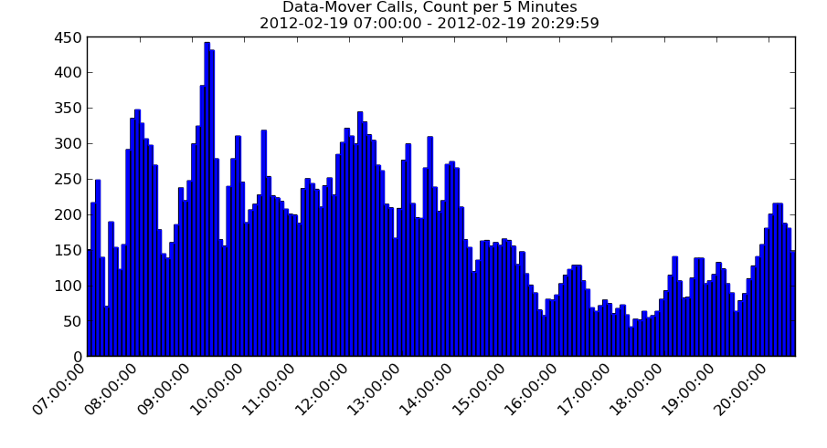

logstats — Summarize and Visualize Data in Log Files
Say you have data buried in log files.
Need to identify some trends?
Need to extract, summarize, and analyze numbers included in the log entries?
Want something quick and easy without the need for an entire infrastructure for log analysis?
That’s what logstats is for.
logstats reads in log files — text files where each line starts with a timestamp.
You specify regular expressions describing the events and/or numeric data you’re interested in.
logstats aggregates statistics about the events by regular time interval — a time series histogram.
By default it prints the data to the screen; if you have matplotlib installed it can plot it, too.
It can also compute overall statistics in addition to the time series statistics.
logstats is a standalone, command-line script, written in python, with no other external dependencies other than matplotlib, and that’s only needed for extra plotting in addition to the default text output.
It’s available at:
logstats can count event occurrences and it can sum and/or average numeric data in the log entries.
The basic way to invoke logstats is:
Basic Syntax
1
$ logstats --TYPE LABEL:REGEX FILENAME
where
TYPE is the statistic type — count, sum, or average.
LABEL is how you want to label the event in output and plots.
REGEX is a regular expression designed to match the log entries of interest.
FILENAME is a log file (timestamped lines of text)
If TYPE is sum or average, then REGEX must contain one subgroup that extracts the specific numeric value of interest.
Whitespace around the : character is ignored, and since typical LABELs and/or REGEXes will have whitespace and/or special metacharacters in them, don’t forget to quote the whole thing so the shell doesn’t attempt to parse it before it gets to logstats.
If no filenames are given, logstats will read from stdin.
Usage is best demonstrated by example, which requires an example log file.
This demo uses a log named data-mover.log from a distributed data transfer system, simplified for demo purposes.
There are log entries for each call to data-get and data-put, and there are entries regarding token acquisition (a semaphore for controlling the number of parallel transfers).
Many of these transfers are happening in parallel, on many hosts, all logging to this file like so:
The exact meaning and sequence of the events is not important — just note the data begging to be summarized and plotted.
Counting Events
Say we want to see the number of data-mover calls as function of time.
We’re therefore interested in the lines containing the string data-mover called — that’ll be the REGEX, just a fixed string in this simple case.
We can give this statistic the label Data-Mover Calls:
This counted up the number of calls that happened during each 5 minutes interval.
(As with all examples here, the text output is truncated for clarity.)
By adding --show-plots and/or --save-plots, we get a picture (requires matplotlib):

Multiple statistics of the same type can be put on the same plot.
For example, the following will plot data-get and data-put calls separately.
Since the strings data-get and data-put are only mentioned in the log entries noting a new call, the REGEXes can again be simple fixed strings:
Often there is some field in the log entries for which you want individual statistics for each unique value that occurs.
For example, when an i/o token is acquired, it notes a mover host that should be used for the transfer, e.g. host:mover4 in this entry:
To plot token acquisition count per mover host, use --breakdown-by-field 10 — the field of interest is the 10th one (when split on whitespace and indexed from 1, including the timestamp):
Some helpful options for conveying more information in the plot are --totals-in-title and --totals-in-legend.
These will include the total values for each thing plotted, which otherwise aren’t shown.
Furthermore, by adding --totals-only or --totals-also, logstats will compute and plot the total counts separately:
Sometimes when using --breakdown-by-field-number there are a lot of small entries that clutter the plots.
Use --breakdown-threshold-percent PERCENT to gather then all into one entry named OTHER.
Summing and Averaging Data in Events
Note that each data-mover call also logs a file size, e.g. --size 367437348 in the following:
These sizes can easily be summed.
The string \d+ is a regular expression for one or more digits.
Putting this in the context of where the size occurs in the log entry, and surrounding it with parentheses to make it a group so that logstats can extract just the number, the REGEX to sum data-get sizes becomes data-get --size (\d+).
Naming this Data Downloaded and adding --units bytes, to label the y-axis for clarity, we have:
To make the y-axis a bit more clear, you can use a --units-conversion factor and adjust the --units label according.
If you want cumulative numbers, instead of the numbers computed independently for each time bin, just add --cumulative.
For example:
If you’re not interested in the entire time range, logstats has options --tstart and --tend to limit the scope.
There is also an option -t to change the time bin interval from the default 300 seconds (5 minutes).
For example, to take the above average for a specific 15 minute range and show statistics for each 60 second interval:
logstats’ basic parsing can be put to use for simply extracting lines of interest — just add --extract, usually along with an event specification (the actual computation will be skipped) and/or a time range:
It can also be used to collate various separate logs, e.g. from different hosts, into one, time-ordered log.
For example, say you have these two logs:
Example Files to Collate
123456789
$ cat host-a.log
2012-02-19 09:30:01: host-a: event one
2012-02-19 09:30:03: host-a: event two
2012-02-19 09:30:04: host-a: event three
2012-02-19 09:30:06: host-a: event four
$ cat host-b.log
2012-02-19 09:30:02: host-b: event one
2012-02-19 09:30:04: host-b: event two
2012-02-19 09:30:07: host-b: event three
Whenever multiple log files are given, logstats will collate the entries (though each must already be time-ordered).
To collate and do nothing else, use --extract with no other selection criteria:
Collating Files
12345678
$ logstats --extract host-a.log host-b.log
2012-02-19 09:30:01: host-a: event one
2012-02-19 09:30:02: host-b: event one
2012-02-19 09:30:03: host-a: event two
2012-02-19 09:30:04: host-a: event three
2012-02-19 09:30:04: host-b: event two
2012-02-19 09:30:06: host-a: event four
2012-02-19 09:30:07: host-b: event three
More
There are many more command line options for tweaking the behavior, e.g. plot tweaks (title, y-axis range, legend details, error bar presence, bar charts instead of pie charts, etc.) and for accommodating different time formats (--time-format, --time-nchars, etc.).
See logstats --help for details:
NAME
logstats - summarize and visualize data in log files
SYNOPSIS
logstats --count|--sum|--average LABEL:REGEX ... [-t SECONDS] [FILENAME...]
DESCRIPTION
This script takes FILENAMEs where each line starts with some sort of
timestamp, searches for text that matchs the given REGEXs (regular
expressions) and prints and/or plots statistics about their occurrences.
For each time bin, if the REGEX was specified as a --count, it will print
the total number of occurrences of the message. If the REGEX was specified
with --sum, it will print out the sum of the relevant number in the message
(the REGEX must use grouping so that group(1) extracts a numeric
substring). For --average, it will print the average of the value. REGEX
syntax is that of the python re module. The LABEL is used to identify the
statistic in the output.
Events do not have to be mutually exclusive -- each line is searched for
all events. As a consequence, if you want to, e.g., both count the number
of occurrences of an event and average values in the messages, specify it
twice, once with -c and once with -a.
By default, the script makes a time series plot. If --totals-also or
--totals-only is given, it will include stats for the entire time range.
If --show-plots or --save-plots is given, this will also plot the values
(requires matplotlib).
Multiple FILENAMES may be given. The lines from all files or collated into
chronological order (if lines from more than one file specify the same
time, lines are taken in the order the filenames are given). The lines in
each individual file are assumed to be in chronological order. If no
FILENAME is given, stdin is used. Stdin may also be explicity specified
using the FILENAME `-'.
This script only recognizes a select few time formats (use
--print-time-formats to display them). You can add a format with the
--time-format option. If the beginning of the a line does not match one of
the known time formats, this tries to use the dateutil module, if installed
(it usually comes along with matplotlib), to parse the time. This can be
easier than specifying the exact format, but there are some drawbacks:
o The entire log entries are searched for event REGEXs, not just the
part after the timestamp (so the REGEX must be constructed to not
match any part of the timestamp).
o The format of times printed by this script will not match those
found in the log.
o Using dateutil is about three times slower than an explicit format
(at least for the specific formats I've tried).
The dateutil parse method is called with fuzzy=True, so unknown tokens are
ignored, but you can drastically improve it's chances by giving this script
the --time-nchars option to specify a the length of string to look at.
If there are any parsing errors trying to extract a time, numeric value to
include in an average, etc., this script will print a warning message to
stderr and move on to the next log entry.
All times have at best a resolution of whole seconds. All counts are
processed as integers, and all averages are processed as floats. For sums,
if the regex group extracts something with a `.', it's processed as a
float, else it's processed as an int.
When plotting, the matplotlib module is particularly picky about timezones.
You probably want to put something like `timezone: US/Eastern' in your
matplotlibrc file (the default is UTC and causes matplotlib to interpret
the numbers differently than the rest of this script).
OPTIONS
-c, --count LABEL:REGEX
An event type to count.
-s, --sum LABEL:REGEX
An event type with a numeric value to sum. The regex should use groups
such that group(1) is the numeric value.
-a, --average LABEL:REGEX
An event type with a numeric value to average. The regex should use
groups such that group(1) is the numeric value.
-t, --interval
The time bin width, in seconds. Default is 300 (5 minutes). The
special strings "minute", "hour", "day", "week", "month", and "year"
can be used, too.
--tstart TIMESTAMP
Restrict processing to times later than or equal to the given time.
The TIMESTAMP is parsed the same way as a log entry is (it doesn't have
to match the format in the log).
--tend TIMESTAMP
Restrict processing to times earlier than the given time. The
TIMESTAMP is parsed the same way a log entry is (it doesn't have to
match the format in the log).
--totals-also
Also print/plot the statistics for the entire time range, after the
breakdown by bin.
--totals-only
Like --totals-also, but only print/plot the totals, no breakdown by
bin.
--cumulative
For time series statistics, report cumulative values rather than values
for each time bin independently.
--breakdown-by-field-number FIELD_NUMBER
For the given statistics, break them down by unique values that appear
in the given FIELD_NUMBER. This saves pre-inspecting the field and
explicitly creating a separate statistic for each. Splitting is on
whitespace; indexing starts at 1 and includes the timestamp part.
--breakdown-threshold-percent PERCENT
When --breakdown-by-field-number is provided, group all breakdowns with
total value that ends up being less than the given PERCENT of the
entire value into a single entry labeled `OTHER'.
--show-plots
Display plots of the statistics (requires matplotlib and an X display).
--save-plots
Save plots of the statistics (requires matplotlib and an X display).
--extract
Write matching log entries to stdout; do not compute statistics. If no
event types are given, write all lines to stdout. Use this in
combination with --tstart and --tend to extract ranges from logs. Note
that lines from which a time cannot be parsed are *not* included in the
output.
--no-headers
In the text output, don't print out the lines of identifying names for
the statistics.
--title TITLE
Override the default title for the plot(s).
--totals-in-title
If there is only one statistic being plotted, add the total count/sum
or overall average (depending on statistic being plotted) to the title.
The applies whether --title is supplied or auto-generated.
--totals-in-legend
Add the total count/sum or overall average (depending on the statistic
being plotted) for each statistic in the legend. This is independent
of --totals-also and --totals-only.
--bar-charts
If plotting statistics of totals, use vertical bar charts instead of the
default pie charts.
--ymin VALUE
The minimum value for the y-axis range. Default is to autoscale.
--ymax VALUE
The maximum value for the y-axis range. Default is to autoscale.
--units UNITS_STRING
Label for the Y axis, title, etc. when applicable (sums and averages).
This does not do any manipulation of the values; it's just a simple
label. See also --units-conversion-factor.
--units-conversion-factor FACTOR
Multiply sums and averages by the given conversion FACTOR. This can be
a numerical value in any format that python's int() or float() can
parse. There is a set of special shortcut strings available, too; see
--print-units-conversion-factors.
--print-units-conversion-factors
Print out the available --units-conversion-factor shortcut strings
('seconds-to-minutes', 'bytes-to-gigabytes', etc.) and their associated
values.
--error-bars-off
By default, if one average is being plotted, error bars will be
plotted. Use this option to not do that.
--error-bars-on
By default, if more than one average is being plotted, error bars will
not be plotted. Use this option to add them.
--legend-on
By default, if only one statistic is being plotted, no legend will be
drawn. Use this option to add it.
--legend-off
By default, if more than one statistic is being plotted, a legend will
be drawn. Use this option to remove it.
--legend-location LOCATION
Force the legend to be in the specific location. LOCATION must be one
of the accepted matplotlib values ("right", "center", "lower left",
etc., or their numerical equivalents) or "left", which is taken to mean
"upper left" (why does matplotlib have "right" but no "left"?).
Default is "best", but sometimes that doesn't look so good.
--time-format FORMAT
Add a format to the list of known formats. Multiple --time-format
options can be given to add multiple formats. See --print-time-formats
format details.
--time-nchars NUMBER
If the dateutil module is installed, use it instead of the specific
formats. Only look at the given NUMBER of leading characters when
parsing the time. The default is 30.
--print-time-formats
Print the known time formats and exit.
-h, --help
Print this help.
(The deprecated options --ylabel and --no-legend have been replaced by
--units and --legend-off, respectively.)
EXAMPLES
See the following for a full write-up and detailed examples:
http://jabrcx.github.io/logstats
Plot 5-second averages of a value that changes randomly every second (takes 60 seconds to run):
( for i in {1..60}; do echo $(date) $RANDOM; sleep 1; done ) | logstats -a 'x: (\d+)' -t 5 --show-plots
Count successful ssh logins:
logstats -c 'ssh_logins: ssh.*session opened' /var/log/messages
Extract a 24 hour period from a log that uses '%Y%m%d%H%M%S' format:
logstats --extract --time-format %Y%m%d%H%M%S --tstart 1004261200 --tend 1004271200 full.log > day.log
AUTHOR
Copyright (c) 2013, John A. Brunelle